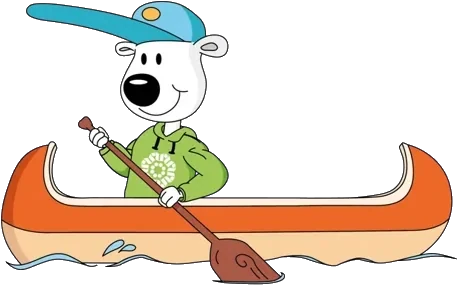

Naar de inhoud
Menu
Groepen
Activiteiten
Vrijwilligers
Verhuur
Fotoboek
Over ons
Contact
Lid worden

Deze pagina bestaat niet
Misschien is de pagina verplaatst. Ga terug naar de homepagina of bekijk de groepen.
Naar de homepagina
Bekijk de groepen